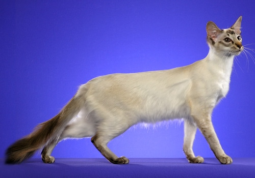

The Balinese Cat is a longhaired cat named after the dancers upon the Indonesian island of Bali. They are not as vocal as Siamese cats, but they are still very vocal, communicating with humans as if it thinks it is one. They are very energetic and playful and are very affectionate.
